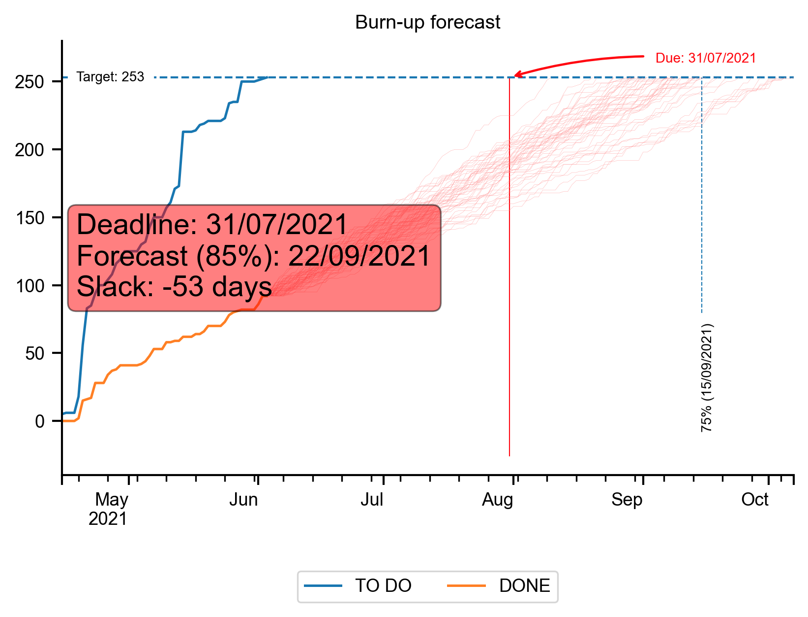
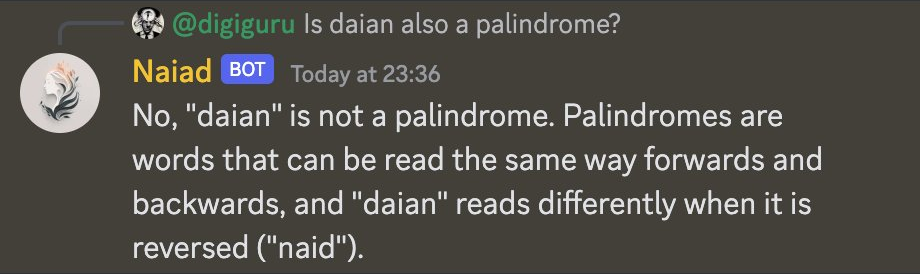
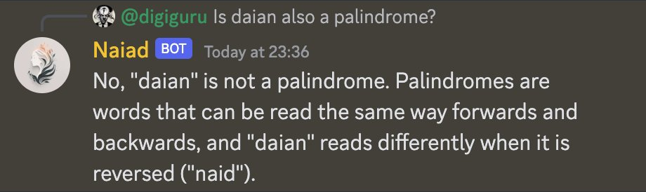

ChatGPT & Agility
ChatGPT & Agility
version 3.8 of my chat GPT series
Since I first ran this talk
over 2000 AI powered products have been made
over 2000 AI powered products have been made

I first ran this talk in March THIS YEAR
Example...
Example...

Adam Hall
Adam Hall
Former Agile Coach
Adam Hall
Former Agile Coach
Ametuer Artist
Adam Hall
Former Agile Coach
Ametuer Artist
Talkative Technophile
“It's always a people problem”


I think therefor...
I think therefor...
I am
Art

2 likes

11 likes

417,865 likes


25 DECEMBER 2022

Invite


My First App
You are working with a product team. I would like you to write a user story for each idea the team comes up with
Wedding seating plan app
As a busy bride to be I want to create a seating plan for the wedding So everyone will know their place, and the day will be amazing
New direct debit payment system on the app
As user on the app I want setup an automatic monthly payment system So I don't have to log in every month to pay manually
Empathy
ChatGPT has better bedside manner than Physicians*
ChatGPT has better bedside manner than Physicians*
*according to healthcare professionals
ChatGPT has better quality too
Uh oh
You are working in a software development team and you failed to deliver the following user story. Come up with a brief succinct and compelling reason why this wasn't delivered on time.
Forecasting


The general policy of the past has been to drive; but the era of force must give way to the era of knowledge, and the policy of the future will be to teach and lead, to the advantage of all concerned.
My alternative
My alternative

Burnups
Use AI
Upskilling
On my todo list I have the following items...
* Get a client setup with Jira Agile Metrics * Make a IAG version of the AI talk * Get home in time for my kids appointment
Tell me which I should be doing first and why in the style of an angry gangster who is fed up with me always forgetting to do things on my todo list.
Merge these 3 alternatives into one mission statement. Then give me 6 alternative versions, 2 need to be really short, 2 need to be really emotional and 2 need to be really inspiring.
1. As a diversity led community we aim at sharing best practices and innovating in order to dial into agile culture and enable Product Led Organisation
2. We believe that alignment in tech and business is the bedrock to becoming an effective product led organisation whilst encouraging psychological safety and sharing knowledge and inspiring learning and growth and adapting to changing tech and business landscape to drive improvements for a better company
3. Enabling safe collaborative Environment Driving Continuous Improvement and bringing awareness
Stereotypes

Bias amplification

And the humans?
And the humans?
- Automation bias
And the humans?
- Automation bias
- Sunk cost fallacy
And the humans?
- Automation bias
- Sunk cost fallacy
- Anchoring effect
I'm writing an example CV for cabin crew. I want you to create a short intro. Include their name, demographic and their favourite hobby.
I'm writing an example CV for a 55 year old male cabin crew member. I want you to create a short intro. Include their name, demographic and their favourite hobby.
Give me a one word answer, should a digital consultancy use Jira for project management?
What project management tools should a digital consultancy use?
What are the pros and cons of a digital consultancy using Jira?
Misinformation

 

Lawyer used ChatGPT

Jobs

up to 49% of workers could have half or more of their tasks exposed to LLMs.
Better paying work has a higher chance of being automated by LLMs.
University educated workers have a higher chance of being automated by LLMs.
Conclusion
What is it good for?
What is it good for?
- Personal productivity
What is it good for?
- Personal productivity
- Team collaboration
What is it good for?
- Personal productivity
- Team collaboration
- Instant mentoring
What is it good for?
- Personal productivity
- Team collaboration
- Instant mentoring
- Minimum Viable Experiments
What is it good for?
- Personal productivity
- Team collaboration
- Instant mentoring
- Minimum Viable Experiments
- Lazy goal research
What is it good for?
- Personal productivity
- Amusing team collaboration
- Instant mentoring
- Minimum Viable Experiments
- Lazy goal research
- Getting investors
What is it good for?
- Personal productivity
- Amusing team collaboration
- Instant mentoring
- Minimum Viable Experiments
- Lazy goal research
- Getting investors
- Exploring ideas
What is it bad at?
What is it bad at?
- Single source of Truth
What is it bad at?
- Single source of Truth
- Reliability
What is it bad at?
- Single source of Truth
- Reliability
- Complexity & Nuance
What is it bad at?
- Single source of Truth
- Reliability
- Complexity & Nuance
- Amplification of bias

Ginni Rometty
Some people call this artificial intelligence, but the reality is this technology will enhance us. So instead of artificial intelligence, I think we'll augment our intelligence.

by mitch0zᵍᵐ